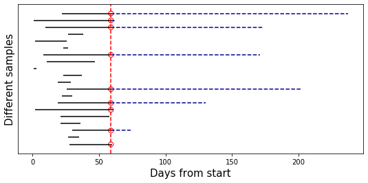
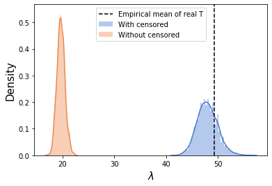
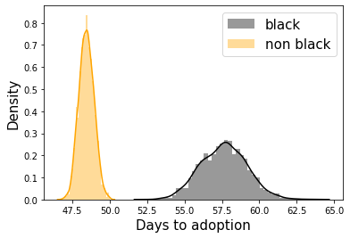
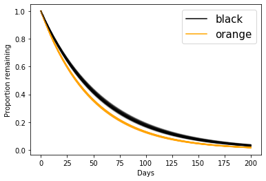
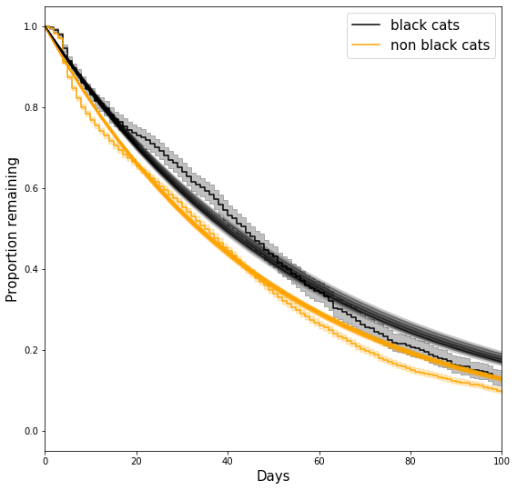

Survival analysis, censoring and hacking the log_prob in TensorFlow Probability
TL;DR
Survival analysis is a super useful technique for modelling time-to-event data; implementing a simple survival analysis using TFP requires hacking around the sampler log probability function; in this post we’ll see how to do this, and introduce the basic terminology of survival analysis.
Survival analysis 101
Survival analysis is an incredibly useful technique for modeling time-to-something data. “something” can be the death a patient (hence the name), the failure of some part in a machine, the churn of a customer, the fall of a regime, and tons of other problems. Since time-to-event questions are everywhere, you’ll see survival analysis (possibly under different names) in clinical studies, econometrics, epidemiology, mechnical engineering, etc.
For me, one of the biggest sell-points of survival analysis is that it provides an elegant solution to handle censored observations. This is a technical term, and it can be quite confusing1, so I’ll try to illustrate it with a toy example. Say you’re selling diapers, and you bought 100 diapers to begin with - that’s your stock. After one month, you’ve sold 32 diapers, and still have 68 diapers in stock. To plan the size of the warehouse you want to build, you want to estimate how long it takes you to sell a diaper. Obviously, taking the mean of selling-times of the 32 diapers you’ve sold would give you an overly optimistic estimation… but what do you do with the 68 diapers you still have in stock? How can you use the information that they’ve been sitting here for some time already to improve your estimation? You call them “censored diapers”2 and use survival analysis.
Survival analysis mathematics
Survival analysis is a huge topic and I’m obviously not going to cover everything in here. I’ll focus on the terminology needed for this post; for a more detailed introduction, I highly recommend checking out lifelines docs (we’ll use lifelines - a python package for survival analysis - in this post, as well).
As mentioned above, survival analysis is about estimating a time-to-event. Let’s denote this time with $T$. Ideally, we’re interested in learning a probability distribution $P$ over the possible values of $T$. Note that this already assumes $T$ happens sometimes in the future, since the distribution integrates to 1. This is a reasonable assumption when we study mortality, but not as much when studying something like conversion rates - see this post for more details if you’re interested. In this post I’ll stick to the more traditional (and morbid) survival analysis in which everyone dies eventually.
So we have this $P_{\theta}\left(T\right)$, which is defined by some parameter $\theta$ (there are also semi-parametric and non-parametric approaches to survival analysis; we’ll get to that below). This formulation allows us to handle censored observations naturally; given the times of the observed event $\left\{O_1,O_2,…,O_n\right\}$ ($n=32$ in the diapers example; these are times until the event happened), and the times of the censored events $\left\{C_1,C_2,…,C_m\right\}$ ($m=68$ in the diapers example; these are times until censoring happened), we can construct the likelihood function
$$ \mathcal{L}\left(\underbrace{\theta}_{\text{parameter}}\vert \underbrace{O_1,O_2,…,O_n,C_1,C_2,…,C_m}_{\text{data}}\right) = \prod_{i=1}^n {P_\theta\left(T=O_i\right)} \prod_{j=1}^m {P_\theta\left(T>C_j\right)} $$
… since the only thing we know about the censored events is that the time-of-event is greater than the time of censoring. Now add a prior on $\theta$ and you’ve got yourself a posterior (up to normalization which we usually don’t really care about).
Let’s cook up an example to see how this works.
Censored diapers
# the necessary imports
import tensorflow as tf
import tensorflow_probability as tfp
import pandas as pd
import seaborn as sns
import matplotlib.pyplot as plt
import numpy as np
from tensorflow_probability import distributions as tfd
from tensorflow_probability import bijectors as tfb
from matplotlib.lines import Line2D
tf.compat.v1.enable_eager_execution()
# for plotting
sns.set_palette("muted")
# for reproducibility
np.random.seed(1324)
tf.random.set_random_seed(234)
Say we start stocking up on diapers on January 1st. Some arrive to us exactly on time, some arrive later - arrival times are uniformly distributed within January. For simplicity, we assume that the real underlying event times (from arrival to selling) are exponentially distributed with a mean of 50 days. This is what we would actually measure without censoring, that is - if we could’ve waited long enough until all (or enough of) the diapers were sold.
start_date = pd.to_datetime('2019-01-01')
N_samples = 1000
mean_time = 50
arrival_rng = pd.date_range(start = start_date, periods=31, freq='D')
arrival_date = np.random.choice(arrival_rng, size = N_samples)
real_T = np.random.exponential(mean_time, size = N_samples).astype(int)
df = pd.DataFrame({ 'Arrival Date': arrival_date, 'real_T': real_T,
'Real Selling Date' : arrival_date + pd.to_timedelta(real_T, unit='d')})
Let’s assume censoring happens on March 1st - that’s the day in which we decide “OK, these diapers were sold after these real-selling-times, these diapers are still in stock, let’s estimate mean time-to-event”. Phrased differently - this is when we get the data. By definition, every diaper whose Real Selling Date is later than March 1st will be considered a censored observation. The times of the observed, uncensored event are from arrival to selling; The times for the censored events are from arrival to the censoring date.
censoring_date = pd.to_datetime('2019-03-01')
df['censored'] = df['Real Selling Date']>censoring_date
df['T'] = np.where(df['censored'], (censoring_date - df['Arrival Date']).dt.days, real_T)
df.head()
| Arrival Date | real_T | Real Selling Date | censored | T |
|---|---|---|---|---|
| 2019-01-03 | 36 | 2019-02-08 | False | 36 |
| 2019-01-14 | 325 | 2019-12-05 | True | 46 |
| 2019-01-16 | 69 | 2019-03-26 | True | 44 |
| 2019-01-11 | 62 | 2019-03-14 | True | 49 |
| 2019-01-19 | 40 | 2019-02-28 | False | 40 |
Here we can already see the problem - censoring makes us severely underestimate the mean selling time:
df.query("censored==0")['T'].mean(), real_T.mean()
(19.681, 49.236)
Pictorially, this is how it looks like. We sample 20 rows of data, and plot their individual timelines. Censoring events are the red circles, and the censored part of each observation is the dashed blue line:
plt.figure(figsize=(9,4))
n = 20
samp_df = df.sample(n)
samp_cens = samp_df['censored']
plt.hlines(np.arange(n),
(samp_df['Arrival Date']-start_date).dt.days,
(samp_df['Arrival Date']-start_date).dt.days + samp_df['T'],
color='k')
plt.hlines(np.where(samp_cens),
(samp_df[samp_cens]['Arrival Date']-start_date).dt.days + samp_df[samp_cens]['T'],
(samp_df[samp_cens]['Real Selling Date']-start_date).dt.days,
color='darkblue', ls='--')
plt.scatter([(censoring_date-start_date).days]*samp_cens.sum(),np.where(samp_cens),
s=50, facecolors='none', edgecolors='r')
plt.axvline((censoring_date-start_date).days, ls='--',color='r')
plt.xlabel("Days from start", size=15)
plt.ylabel("Different samples", size=15)
plt.yticks([])
Obviously, the mean length of the black lines is significantly shorter than that of all the lines; this is exactly the bias caused by ignoring the censored observations.

The model
We assume a simple exponential distribution for the event times distribution:
$$P_{\lambda}\left(T\right)=\frac{1}{\lambda}e^{-\frac{T}{\lambda}}$$
In this parametrization, $\lambda$ is the mean time-to-event; we want to infer $\lambda$ from the data. We put a $\text{Normal}\left(\mu=3,\sigma=3\right)$ prior on $\log\lambda$, representing our prior belief that diapers aren’t sold in nanoseconds nor in geological timescales, and the constraint that $\lambda$ must be positive.
So, this means that our log probability function is:
$$\underbrace{\sum_{i=1}^n \log{P_\lambda\left(T=O_i\right)}}_{\text{likelihood of observed}} + \underbrace{\sum_{j=1}^m \log{P_\lambda\left(T>C_j\right)}}_{\text{likelihood of censored}}+\underbrace{\log\text{Normal}\left(\lambda\vert\mu=3,\sigma=3\right)}_{\text{Prior on }\lambda}$$
The first sum and the last term are easy - we just define an exponential model with the prior we want and feed it with the observed samples. The tricky part is how to handle with the second, censored sum.
LCCDF
The thing we need to implement in order to feed the right log_prob function to the sampler is called LCCDF: an intimidating acronym the stands for Log Complementary Cumulative Density Function. We’ll unfold this backwards:
- The cumulative density function (CDF) of our time-to-event distribution is $F_\lambda\left(t\right)=P_\lambda(Tֿ\le t)$.
- The complmentary CDF (CCDF) is $1-F_\lambda\left(t\right)=P_\lambda(T>t)$;
- Its log (LCCDF) is $\log P_\lambda(T>t)$, which is exactly what we want.
Some LCCDFs are implemented in languages such as Stan (this is what we want), but in TFP (currently) we have to implement this ourselves. Luckily, the CDF of the exponential distribution is $1-e^{-\frac{T}{\lambda}}$, which means our LCCDF is super simple - $\log P_\lambda(T>t)=-\frac{T}{\lambda}$. Cases for which we don’t have an analytical expression for the LCCDF are trickier to handle; The solution in Sigrid Keydana’s post (using TFP built-in CDF functions) is more general, but I found it less numerically stable, and writing everything explicitly helped me understand what’s going on. We’ll stick with the simpler case in this introductory post.
We now go ahead and implement this:
#converting the data to tf tensors
obs_times = tf.convert_to_tensor(df.query("censored==0")['T'])
cens_times = tf.convert_to_tensor(df.query("censored==1")['T'])
This is our model, containing the normal prior on $\log\lambda$ and the exponential likelihood terms. This is pretty straightforward:
obs_model = tfd.JointDistributionSequential(
[
tfd.Normal(3, 3), #log_rate
lambda log_rate:
tfd.Independent(tfd.Sample(
tfd.Exponential(rate =
1/tf.math.exp(log_rate[:,tf.newaxis])
)), reinterpreted_batch_ndims = 1)
]
)
Now, given a $\log\lambda$, the exponential LCCDF function simply sums $-\frac{T}{\lambda}$ over all censored times. Note that log_rate has shape (n_chains,), and cens_times has shape (n_cens_times,), so we need to add a tf.newaxis to make sure both are broadcasted along the right dimensions. We also cast cens_times to float so the division is properly defined.
def exponential_lccdf(log_rate):
return tf.reduce_sum(
-tf.cast(cens_times, log_rate.dtype)[tf.newaxis,:]/tf.exp(log_rate[:,tf.newaxis]),
axis=-1
)
Finally, we combine the likelihood of the observed times and the prior, which are given by obs_model.log_prob evaluated at the observed times, and the likelihood of the censored times, which we just defined:
def log_prob(log_rate):
lp = obs_model.log_prob([log_rate, tf.cast(obs_times, log_rate.dtype)[tf.newaxis,:]])
censored_likelihood = exponential_lccdf(log_rate)
return lp + censored_likelihood
We now proceed as usual, by calling our HMC sampler helper function:
@tf.function
def sampleHMC(log_prob, inits, bijectors_list = None):
inner_kernel=tfp.mcmc.HamiltonianMonteCarlo(
target_log_prob_fn=log_prob,
step_size=0.1,
num_leapfrog_steps=8
)
if bijectors_list is not None:
inner_kernel = tfp.mcmc.TransformedTransitionKernel(inner_kernel, bijectors_list)
adaptive_kernel = tfp.mcmc.SimpleStepSizeAdaptation(
inner_kernel=inner_kernel,
num_adaptation_steps=800
)
return tfp.mcmc.sample_chain(
num_results=1000,
current_state=inits,
kernel=adaptive_kernel,
num_burnin_steps=1000,
trace_fn=None
)
n_chains = 4
initial_log_rate = obs_model.sample(n_chains)
samps = sampleHMC(log_prob, [tf.ones_like(initial_log_rate[0])*3.])
Just for comparison, if we call the sampler without the censored likelihood (meaning we “throw away” the censored observations), this is what we get:
samps_ignore_censored = sampleHMC(
lambda log_rate:obs_model.log_prob([log_rate, tf.cast(obs_times, log_rate.dtype)[tf.newaxis,:]]),
[tf.zeros_like(initial_log_rate[0])]
)
sns.distplot(np.exp(samps[0].numpy().flatten()),label='With censored')
sns.distplot(np.exp(samps_ignore_censored[0].numpy().flatten()),label='Without censored')
plt.axvline(real_T.mean(),ls='--',c='k',label='Empirical mean of real T')
plt.legend()
plt.xlabel("$\lambda$",size=15)
plt.ylabel('Density',size=15)
pass

Survival regression
This was a very simple and cooked-up demonstration of survival analysis, mainly to illustrate how to account for censored observations by adding the necessary LCCDF to the sampler log probability function. However, in many cases what we actually want is to understand how different features affect survival probability. For example, we’d like to understand how a given treatment affects the survival probabilities of patients, or the age of customers affects time-to-lapse or whatnot. This is called survival regression.
Like in the previous posts, I’m sticking to the excellent examples from McElreath’s Statistical Rethinking book. However, this example is actually not from the book itself, but from Statistical Rethinking Winter 2019 Lecture 13 from 23:43 onwards (you should probably go watch this now, the relevant part is about 10 minutes long).
The data in this example is from an animal care facility in Austin (source), and describes cats arrival time to the facility, when/if/how they left, breed, color, age, etc. For us, the event of interest is adoption - we’ll try to estimate time-to-adoption. But this time, we’re using the cats color as a predictor: we’ll compare the adoption times of black cats vs. non-black cats.
We’re using the same data as McElreath (who kindly supplied both the data and the .R script containing the processing):
# references to original data (from the email)
df = pd.read_csv("https://raw.githubusercontent.com/adamhaber/adamhaber.github.io/master/assets/AustinCats.csv", delimiter=';')
df['black'] = df.color.apply(lambda x: x=='Black')
df['adopted'] = df.out_event.apply(lambda x: x=='Adoption')
is_black_cens = tf.convert_to_tensor(df.query('adopted==0').black.values.astype(float))
is_black_obs = tf.convert_to_tensor(df.query('adopted==1').black.values.astype(float))
y_cens = tf.convert_to_tensor(df.query('adopted==0').days_to_event)
y_obs = tf.convert_to_tensor(df.query('adopted==1').days_to_event)
The model is very similar to our made-up example from before - the only thing that’s different is that now $\log\lambda$ is a simple linear function:
$$\log\lambda = \alpha+\beta\cdot\text{is_black}$$
$\text{is_black}$ equals one for black cats, and zero otherwise, which means the log rate equals $\alpha+\beta$ for black cats and $\alpha$ otherwise. So, instead of estimating $\log\lambda$ directly, we’re estimating the parameters of this simple linear model. The prior for the intercept is the same as in the previous example, and the prior for the slope is centered around zero (we don’t have a-priori reason to believe black cats are bigoted against), and of the same scale.
obs_model = tfd.JointDistributionSequential(
[
tfd.Normal(3, 3), #alpha
tfd.Normal(0, 3), #beta
lambda beta, alpha:
tfd.Independent(tfd.Sample(
tfd.Exponential(rate =
1/tf.math.exp(tf.cast(is_black_obs[tf.newaxis,:], beta.dtype)*beta[:,tf.newaxis]+\
alpha[:,tf.newaxis])
)), reinterpreted_batch_ndims = 1)
]
)
The LCCDF function is again very similar, but this time in the denominator we have our simple linear function and not just a single parameter:
def exponential_lccdf(alpha, beta):
return tf.reduce_sum(
-tf.cast(y_cens[tf.newaxis,:],alpha.dtype) / tf.exp(tf.cast(is_black_cens[tf.newaxis,:], beta.dtype) * beta[:,tf.newaxis] + alpha[:,tf.newaxis]),
axis=-1
)
log_prob is exactly the same, and so is the code for calling the sampler:
def log_prob(alpha, beta):
lp = obs_model.log_prob([alpha, beta, tf.cast(y_obs, alpha.dtype)[tf.newaxis,:]])
potential = exponential_lccdf(alpha, beta)
return lp + potential
n_chains = 4
initial_coeffs = obs_model.sample(n_chains)
alphas, betas = sampleHMC(log_prob, [tf.zeros_like(initial_coeffs[0]), tf.zeros_like(initial_coeffs[1])])
We convert samples back to numpy for easier plotting, and compute the corresponding rates:
alphas = alphas.numpy().flatten()
betas = betas.numpy().flatten()
lambda_black = np.exp(alphas + betas)
lambda_non_black = np.exp(alphas)
sns.distplot(lambda_black,color='k',label='black')
sns.distplot(lambda_non_black,color='orange',label='non black')
plt.legend(fontsize=15)
plt.xlabel("Days to adoption",size=15)
plt.ylabel("Density",size=15)

It turns out people are biased against black cats! We can also use the inferred rates to plot one of the central quantities of interest in survival analysis - the survival function. The survival function is simply the CCDF from before:
$$S(t) = P(T>t)$$
$S(t)$ quantifies the probability of surviving longer than $t$. For the minimal possible duration (0 in our case), $S(0)=1$, and $S(\infty)=0$ (everyone dies). We can use the inferred rates to plot the estimated survival curves:
t = np.linspace(0,200)
for lam_nb, lam_b in zip(lambda_non_black[:100], lambda_black[:100]):
plt.plot(t, np.exp(-t/lam_nb),c='orange', alpha=0.1)
plt.plot(t, np.exp(-t/lam_b),c='black', alpha=0.1)
plt.ylabel("Proportion remaining")
plt.xlabel("Days")
legend_elements = [Line2D([0], [0], color='black', label='black'),
Line2D([0], [0], color='orange', label='orange')]
plt.legend(handles=legend_elements,fontsize=15)

… which is the same plot as in the lecture.
Overthinking box - Kaplan Meier non-parametric estimator
In all we’ve done so far, we’ve assumed a specific parametric form for the durations distributions… but how can we check if this assumption makes any sense? One way is to compare it to a non-parametric estimator of the survival function.
The Kaplan-Meier estimator is a non-parametric estimator that does just that. It is defined as follows:
$$S_{KM}\left(t\right) = \prod_{t_i<t}{\left(1-\frac{d_i}{n_i}\right)}$$
Where $t_i$ are all the event times smaller than $t$ (from the data itself); $n_i$ is the number of people “at risk” between $t_{i-1}$ and $t_i$ (which means they survived all the events up to and including $t_{i-1}$); and $d_i$ is the number of observed deaths at time $t_i$ (deaths at the interval $\left(t_{i-1},t_i\right]$).
This formula has a pretty intuitive explanation - surviving up to time $t$ means surviving all the events before $t$; For each such event, in which $d_i$ out of $n_i$ subjects died, the estimated survival probability is $1-\frac{d_i}{n_i}$, so surviving all of them is the product of all these numbers.
Instead of implementing KM estimator ourselves, we’ll use the wonderful lifelines library, which is the most comprehensive python package for survival analysis I know of (R has a much better survival analysis ecosystem). Implementation is easy, but if you’re interested in survival analysis, you should check out lifelines; it has a wonderful API, great docs and a wide range of models, helper functions, plotting and summary statistics.
We’ll fit two KM estimators - one for black cats and one for non-black cats, so we can compare the non-parametric to our parametric survival functions:
from lifelines import KaplanMeierFitter
plt.figure(figsize=(9,9))
ax = plt.subplot(111)
kmf = KaplanMeierFitter()
kmf.fit(df[df.black==1].days_to_event, event_observed=df[df.black==1].adopted,label='black cats')
kmf.plot(ax=ax,c='k')
kmf.fit(df[df.black==0].days_to_event, event_observed=df[df.black==0].adopted,label='non black cats')
kmf.plot(ax=ax,c='orange')
for lam_nb, lam_b in zip(lambda_non_black[:100], lambda_black[:100]):
plt.plot(t, np.exp(-t/lam_nb),c='orange', alpha=0.1)
plt.plot(t, np.exp(-t/lam_b),c='black', alpha=0.1)
plt.ylabel("Proportion remaining",size=15)
plt.xlabel("Days",size=15)
plt.legend(fontsize=15)
plt.xlim(0, 100)

What are we seeing here?
- The “smooth” black and orange curves are exponential survival curves with the sampled parameters.
- The “staircase” curves (aka piecewise constant functions) are the non parametric KM estimates. For details about their confidence intervals, see here.
So, how good is our assumed parametric form? That, of course, depends on how much you care about capturing all the small details; It seems to capture the overall trend, but, for example, it doesn’t quite capture the “sigmoidal”-like behavior around days 0-10, and it overestimates the survival probability between days 60-100 for both groups. This is somewhat expected - we’d be surprised if a single-parameter model would be able to capture all the details we see in the non-parametric curve.
Summing up
This post was pretty introductory - its main goal was to explain what censorship is (I think this is a super important concept to understand if you’re doing any kind of data analysis), and to implement a likelihood function that can handle censored observations. In the next post we’ll dive a little deeper into survival regression, still from a bayesian modeling persepctive.
-
One possible source of confusion here is the terminology; you will find the expressions “censored observations”, “censored times”, “events whose time were censored”, etc. used pretty interchangeably. Unless stated otherwise, all of these usually refer to same thing. ↩︎
-
Technically, these are called “right censored” diapers; if you think of time as going from left to right like it’s usually plotted, than the right “tail” of the plots for these diapers is censored from us. There are also other kinds of censoring, but we’ll ignore them in this post. ↩︎
Adam Haber
Computational Neuroscience PhD Student
Interested in probabilistic programming, computational statistics, statistical physics and programming languages.